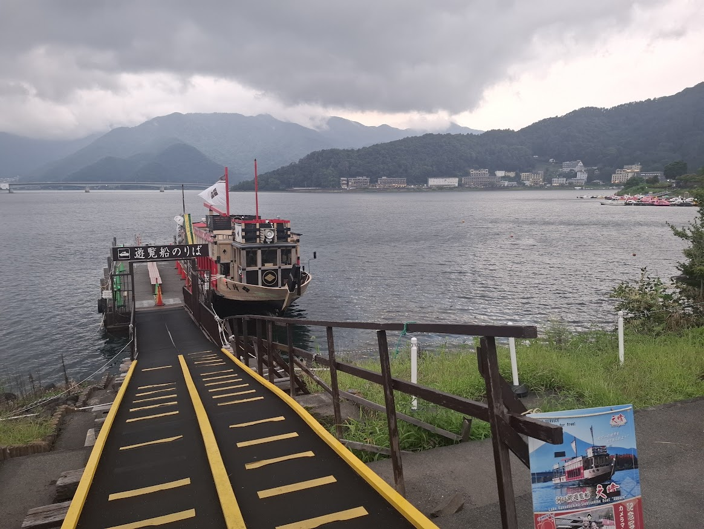
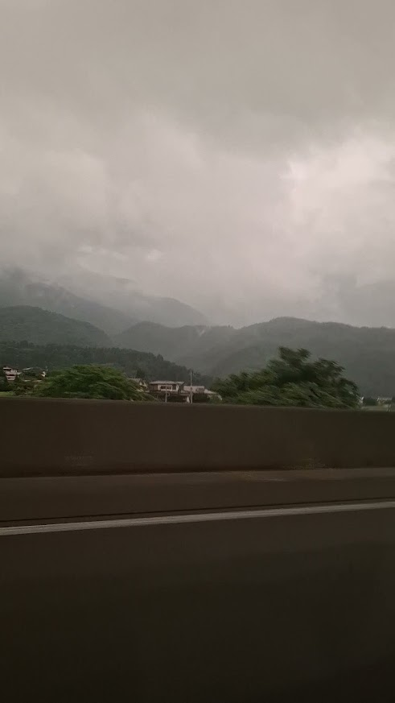
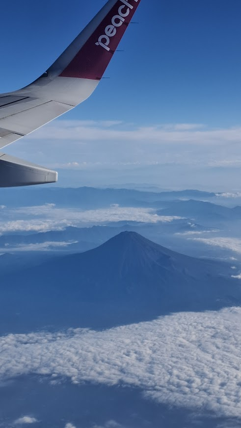
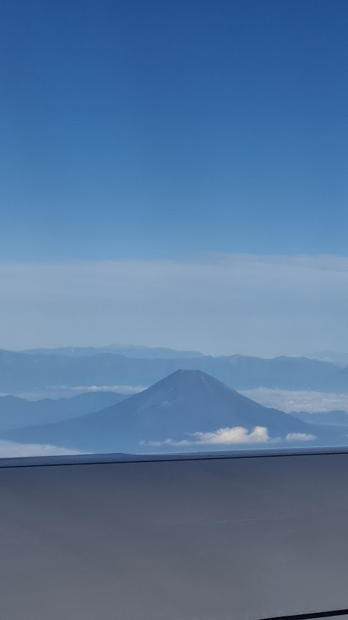

富士山橫跨山梨縣與靜岡縣，是日本最高峰與最具代表性的精神象徵。從東京出發搭乘高速巴士或特急電車約兩小時即可抵達河口湖周邊，近距離欣賞壯麗的山景與湖光山色。

河口湖
富士五湖中最受歡迎的觀光勝地，天氣晴朗且無風時，湖面上會倒映出清晰對稱的「逆富士」絕景，周邊也有許多景觀咖啡廳與纜車設施。
旅遊照片紀錄



富士山橫跨山梨縣與靜岡縣，是日本最高峰與最具代表性的精神象徵。從東京出發搭乘高速巴士或特急電車約兩小時即可抵達河口湖周邊，近距離欣賞壯麗的山景與湖光山色。

富士五湖中最受歡迎的觀光勝地，天氣晴朗且無風時，湖面上會倒映出清晰對稱的「逆富士」絕景，周邊也有許多景觀咖啡廳與纜車設施。


